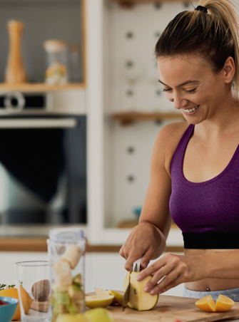

<section>
  <div class="container">
    <h2 class="visually-hidden">How it works</h2>
    <div class="works-wrapper">
      
    </div>
    <div class="works-right-side">
      <h3 class="works-subtitle">
        To order your <span class="text-accent">vegetable</span> basket, simply
        follow these
        <span class="text-accent">easy steps</span>
      </h3>
      <p class="works-desc">
        Our baskets are assembled with care and delivered straight to your
        doorstep, so you can enjoy the taste of fresh fruit without ever leaving
        your home.
      </p>
      <ol class="works-list">
        <li class="works-item">
          <p class="works-text">
            Just choose the vegetable you want to order by clicking on the
            checkboxes next to it.
          </p>
        </li>
        <li class="works-item">
          <p class="works-text">Click on the basket and fill out the form.</p>
        </li>
        <li class="works-item">
          <p class="works-text">
            Sit back and relax! Your fresh vegetables basket will be delivered.
          </p>
        </li>
      </ol>
    </div>
  </div>
</section>
